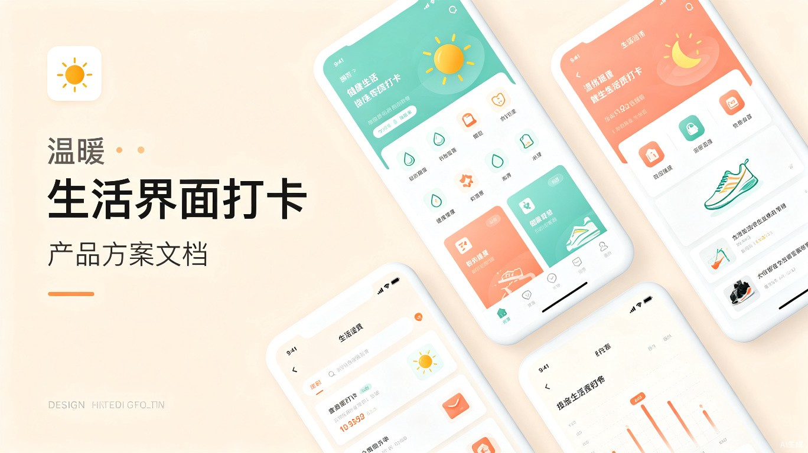

生活习惯小助手 V2
完整产品方案与技术部署指南
1. 产品定位与技术方案
1.1 产品定位
生活习惯小助手 V2是一款融合中医养生智慧与现代健康科学的轻量级打卡应用。以《黄帝内经》《遵生八笺》等古籍为理论基础，结合现代营养学、运动科学、睡眠医学，帮助用户通过每日习惯打卡建立健康生活方式。
中医养生内核
子午流注时辰提醒、五色养五脏饮食、五劳防护、体质辨识，古典智慧数字化
数据驱动反馈
热力图、柱状图、连续打卡等级、成就系统，可视化激励坚持
零安装PWA
纯前端单HTML文件，GitHub Pages 部署，添加到主屏幕即用
AI养生顾问
内置AI对话，基于用户体质和习惯提供个性化养生建议
1.2 技术架构
| 层级 | 技术选型 | 说明 |
|---|---|---|
| 前端框架 | 原生HTML/CSS/JS | 零依赖，单HTML文件，加载极速 |
| 数据存储 | localStorage | 本地持久化，隐私安全，离线可用 |
| PWA支持 | Service Worker + manifest.json | 可安装到桌面/主屏幕，离线缓存 |
| AI接口 | Cloudflare Workers代理 | 转发API请求，隐藏密钥 |
| 部署平台 | GitHub Pages | 免费HTTPS，CDN加速，零成本运维 |
| 字体方案 | 系统字体栈 | 无需加载外部字体，启动速度<1s |
1.3 差异化优势
- 古今融合：国内唯一结合《黄帝内经》子午流注理论的习惯打卡应用
- 零门槛：无需注册、无需下载App、无需后端服务器，打开网页即用
- 全功能离线：PWA + localStorage 架构，断网环境完全可用
- 24部养生文献：内置参考文献文库（9部经典古籍+15部现代著作）
- AI个性化：基于体质测试结果定制养生方案
2. 核心功能详解
2.1 功能模块总览
| 模块 | 核心功能 | 数据维度 |
|---|---|---|
| 📋 习惯打卡 | 布尔/计数/计时/饮水/负向 5种类型 | 每日完成率、连续天数 |
| 📊 统计分析 | 热力图、周柱状图、排行、等级 | 7/30/90/365天 |
| 🍅 番茄专注 | 25min专注+5min休息，4轮循环 | 每日专注次数/分钟 |
| ⚙️ 习惯管理 | 启用/禁用、删除、重复设置、提醒 | 习惯配置 |
| 🤖 AI顾问 | 对话式养生问答，上下文记忆 | 对话历史（内存） |
| 🩺 体质测试 | 九种体质辨识（60题），个性推荐 | 体质结果（持久化） |
| ⏳ 子午流注 | 12时辰经络当令对照，实时提示 | 时辰数据（静态） |
| 📚 参考文献库 | 24部养生经典，可点击阅读详情 | 静态链接 |
| 🛡️ 五劳防护 | 久视/久卧/久坐/久立/久行防护提醒 | 完成记录 |
| 💡 健康建议 | 每个习惯卡片展示古今养生智慧 | 55条HEALTH_TIPS |
| 💭 情志记录 | 怒/喜/思/悲/恐 五行情绪追踪 | 每日情绪选择 |
| 📅 补签系统 | 过去7天可补签，不中断连续记录 | 补签记录 |
| 🏆 成就系统 | 1-5级等级称号，连续打卡奖励 | 累计连续天数 |
| 🎨 打卡海报 | Canvas生成分享海报，长按保存 | 动态生成 |
| 💾 数据管理 | JSON导出/导入，完整备份恢复 | 全量数据 |
2.2 打卡核心流程
中断保护机制：用户切换日期查看历史数据时，自动保存当前编辑状态。关闭弹窗前弹出确认。数据在每次操作后立即写入 localStorage，刷新/崩溃不丢失。
2.3 习惯类型系统
| 类型 | 适用场景 | 记录方式 | 示例 |
|---|---|---|---|
| 布尔 boolean | 是/否型习惯 | 点击打卡/取消 | 早起、早餐、早睡 |
| 计数 count | 需要记录次数 | 输入数值 | 跳绳1000个、蔬果5份 |
| 计时 timer | 需要记录时长 | 输入分钟数 | 晨跑30min、阅读20min |
| 饮水 water | 每日饮水追踪 | 快捷杯数+自定义ml | 每日饮水2000ml |
| 负向 negative | 记录不该做的事 | 打卡表示违反 | 不吸烟、不熬夜 |
| 选择 select | 多选一记录 | 选择选项 | 情绪记录（怒喜思悲恐） |
3. 视觉与交互设计
3.1 设计系统
| Token | 值 | 用途 |
|---|---|---|
| --bg | #FDF8F0 | 主背景（温暖米白） |
| --bg2 | #F5EDE0 | 卡片/次级背景 |
| --ink | #2D3436 | 主文字色 |
| --accent | #7CB69D | 主强调色（薄荷绿） |
| --accent2 | #F4A683 | 次强调色（珊瑚橙） |
| --radius | 14px | 全局圆角 |
3.2 交互反馈层级
- 微反馈：打卡按钮缩放、卡片点击波纹、Toast提示弹出
- 中反馈：面板滑入/滑出动画、进度环过渡动画、热力图渐变
- 强反馈：全部完成庆祝效果、等级提升通知、成就解锁
3.3 底部导航结构
采用五按钮Tab布局：打卡（核心）| 统计 | 番茄钟（中心突出）| 管理 | AI
4. 市场分析与竞品调研
4.1 目标用户画像
| 画像 | 特征 | 核心需求 |
|---|---|---|
| 养生爱好者 | 30-50岁，关注中医养生 | 时辰养生、体质调理、古籍指导 |
| 职场白领 | 25-40岁，久坐族 | 定时提醒、护眼/护腰/饮水、减压 |
| 自律挑战者 | 18-35岁，习惯养成 | 打卡记录、连续天数、数据可视化 |
| 慢病管理人群 | 40-65岁，有慢性病 | 饮食管理、运动记录、情绪调节 |
4.2 竞品对比
| 维度 | 小打卡 | Habitica | Life Log | 本产品 |
|---|---|---|---|---|
| 中医养生 | 无 | 无 | 无 | 核心特色 |
| 子午流注 | 无 | 无 | 无 | 有 |
| AI顾问 | 无 | 无 | 无 | 有 |
| 安装门槛 | 需下载App | 需下载App | 需下载App | 网页即用 |
| 离线可用 | 部分 | 否 | 部分 | 完全离线 |
| 免费程度 | 内购多 | 内购多 | 订阅制 | 完全免费 |
| 数据隐私 | 云端存储 | 云端存储 | 云端存储 | 纯本地 |
5. 盈利模式
5.1 分阶段策略
| 阶段 | 目标 | 策略 | 预期 |
|---|---|---|---|
| 第一阶段 | 种子用户积累 | 完全免费，口碑传播 | 0-5000用户 |
| 第二阶段 | 增值服务 | 高级AI（GPT-4）、定制养生方案 | 订阅 ¥9.9/月 |
| 第三阶段 | 平台化 | 养生课程、智能硬件联动 | 多元化收入 |
5.2 收入来源
- 免费版：全部基础功能免费，建立用户信任
- 高级版订阅：深度AI养生分析、个性化体质调理方案
- 养生课程分销：联合中医机构推出付费养生课程
- 品牌合作：健康食品/智能穿戴品牌的精准推荐
6. 部署与发布指南
6.1 GitHub Pages 部署（推荐）
最简方案：本项目已部署在 GitHub Pages，零服务器成本，全球CDN加速。
步骤一：克隆仓库
git clone https://github.com/rui66648/lifestyle-assistant.git
cd lifestyle-assistant步骤二：推送代码
git add .
git commit -m "update"
git push origin main步骤三：启用 GitHub Pages
- 进入仓库 Settings → Pages
- Source 选择
main分支，目录选/(root) - 保存后等待1-2分钟生效
- 访问
https://rui66648.github.io/lifestyle-assistant/
6.2 手机添加到主屏幕
| 平台 | 操作步骤 |
|---|---|
| iOS Safari | 打开页面 → 点击分享按钮 → "添加到主屏幕" |
| Android Chrome | 打开页面 → 点击三点菜单 → "添加到主屏幕" |
| Android 微信 | 打开页面 → 点击右上角"..." → "添加到桌面" |
6.3 AI代理部署（可选）
AI养生顾问功能需要一个API代理来隐藏密钥：
Cloudflare Workers 配置
// workers/ai-proxy.js
export default {
async fetch(request) {
const url = new URL(request.url);
if (url.pathname === '/v1/chat/completions') {
const apiKey = '你的API密钥';
const resp = await fetch('https://api.openai.com/v1/chat/completions', {
method: 'POST',
headers: {
'Content-Type': 'application/json',
'Authorization': 'Bearer ' + apiKey
},
body: request.body
});
return new Response(resp.body, {
headers: { 'Content-Type': 'application/json' }
});
}
return new Response('Not found', { status: 404 });
}
};
注意：如果不部署AI代理，应用其余功能完全正常运行。AI对话面板会提示"请配置API地址"。
6.4 应用商店上架（进阶）
可将PWA打包为原生App上架：
- Android：使用 PWABuilder (pwabuilder.com) 或 Bubblewrap 打包APK
- iOS：使用 PWABuilder 或 Capacitor 打包，需Apple Developer账号（$99/年）
6.5 备选部署方案
| 方案 | 优点 | 缺点 | 适合 |
|---|---|---|---|
| GitHub Pages | 免费、CDN、HTTPS | 仅支持静态文件 | 当前方案 |
| Vercel | 自动部署、边缘加速 | 免费额度有限 | 需要CI/CD时 |
| Cloudflare Pages | 全球CDN、Workers集成 | 配置稍复杂 | 需要AI代理时 |
| Netlify | 一键部署、表单处理 | 带宽有限 | 快速上线 |
7. 交付文件清单
7.1 核心文件
| 文件 | 说明 | 大小 |
|---|---|---|
index.html | 主应用（全部功能） | ~250KB |
manifest.json | PWA清单文件 | ~1KB |
sw.js | Service Worker离线缓存 | ~2KB |
workers/ai-proxy.js | AI API代理（可选） | ~1KB |
7.2 养生参考文献文库（24部）
每部文献为独立HTML页面，与主应用通过超链接互通：
| 类别 | 文献 |
|---|---|
| 经典古籍（9部） | 黄帝内经、遵生八笺、老老恒言、饮膳正要、养生论、寿世青编、备急千金要方、抱朴子、闲情偶寄 |
| 现代著作（15部） | 你是你吃出来的、九种体质养生全书、科学休息、求医不如求己、拉伸、黄帝内经说什么、睡眠革命、运动改造大脑、正念的奇迹、抗炎生活、肠子的小心思、深度营养、控糖革命、端粒效应 |
7.3 技术指标
| 指标 | 数值 |
|---|---|
| 代码行数 | ~5000行（HTML+CSS+JS单文件） |
| Gzip后大小 | ~40KB |
| 首屏加载 | <1秒（无外部依赖） |
| 离线可用 | 是（Service Worker缓存） |
| 浏览器兼容 | Chrome 80+、Safari 13+、Firefox 78+ |
| 习惯库数量 | 44个预设习惯 |
| HEALTH_TIPS | 55条古今养生建议 |